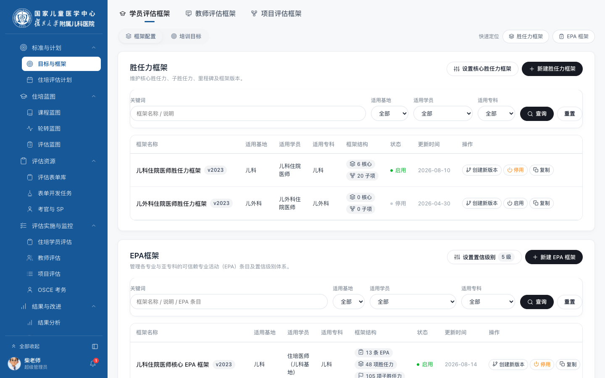
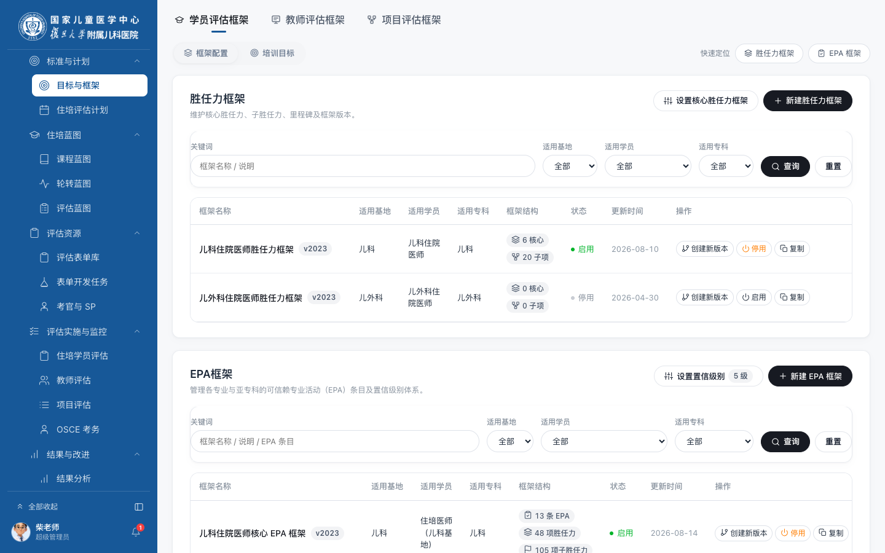

修改记录总清单（索引）
记录总数：1 项
| 序号 | 模块与改动主题（点击跳转） | 端别 | 定位 / 触发路径 | 涉及文件与留痕形式 |
|---|---|---|---|---|
| 01 | 左侧导航 · 一二三级菜单统一字号与行高（取消逐层缩减） | PC端 | 全站 PC 端左侧导航 → 多级菜单（如 管理端 → 评估管理 → 标准与计划 → 目标与框架） | sidebar.css、nav.css · 图文对比（2 张） |
左侧导航 · 一二三级菜单统一字号与行高（取消逐层缩减）
定位：全站 PC 端左侧导航 → 评估管理等三级菜单（manager.html?page=评估目标和框架）。实现文件：shared/styles/sidebar.css、shared/styles/nav.css。
修改前 · 存在问题
- 三级菜单项（
.sb-subgroup-items .sb-item）被缩减为height: 34px; font-size: 13.5px，图标缩减为18px / 16px，而一、二级菜单为36px / 14px与20px / 18px，形成逐层递减。 - 旧版兼容样式（
.nav-item/.submenu-item/.third-leaf）同样存在40px → 36px → 30px与字号逐层缩减。

修改后 · 改动说明
- 将
.sb-subgroup-items .sb-item统一为height: 36px; min-height: 36px; font-size: 14px，图标统一为20px / 18px，一二三级完全一致。 - 同步将
shared/styles/nav.css中.nav-item/.submenu-item/.third-leaf统一为min-height: 36px; font-size: var(--font-base)。
